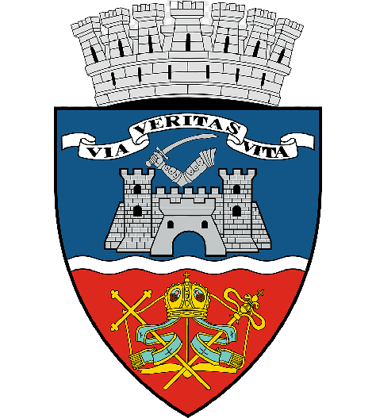
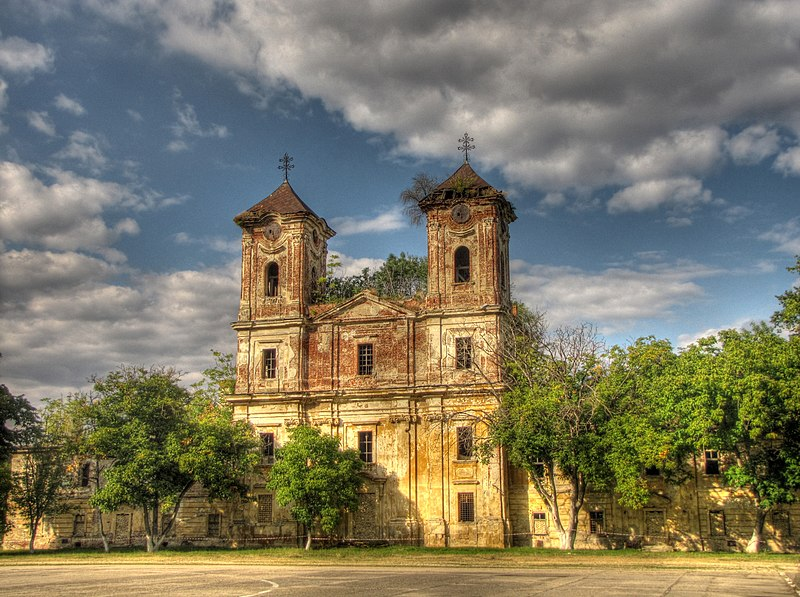

Introducere
Arad este un oraș în vestul României, situat pe malul drept al râului Mureș. Este reședința județului Arad și un important centru cultural, economic și turistic.
Istorie
Arad a fost fondat în secolul al XI-lea de către maghiari, iar în secolele următoare a fost un important centru comercial și militar. În secolul al XIX-lea, Arad a devenit un important centru cultural și politic, fiind una dintre primele localități din Europa care a adoptat iluminismul. În timpul Revoluției de la 1848, Arad a jucat un rol important în lupta pentru independență a Ungariei.
Obiective turistice
- Cetatea Aradului
- Muzeul Arădean
- Parcul Ioan Slavici
- Palatul Cultural